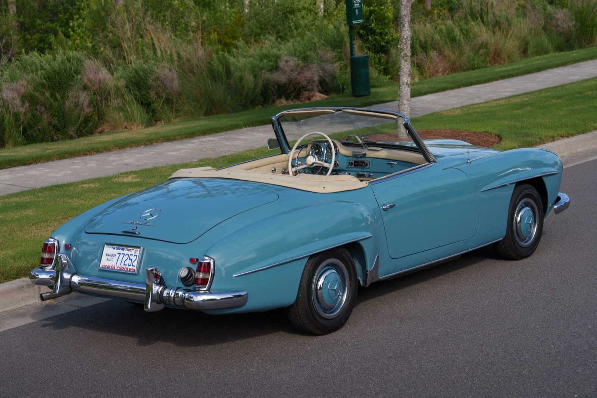
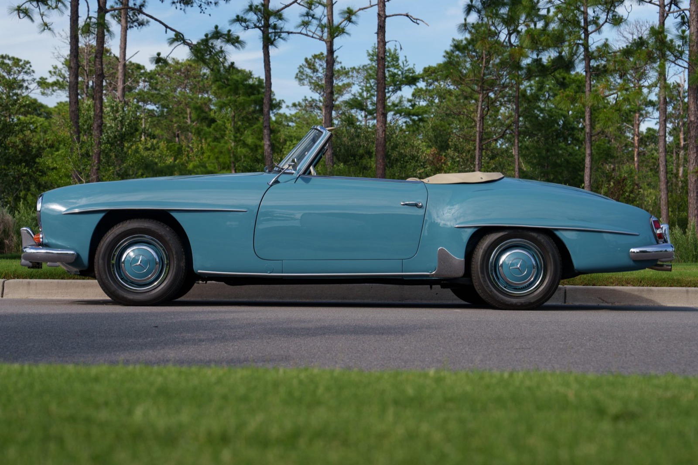
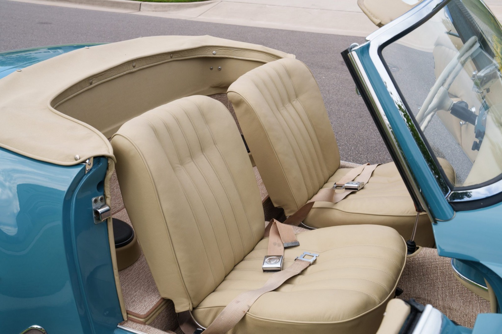
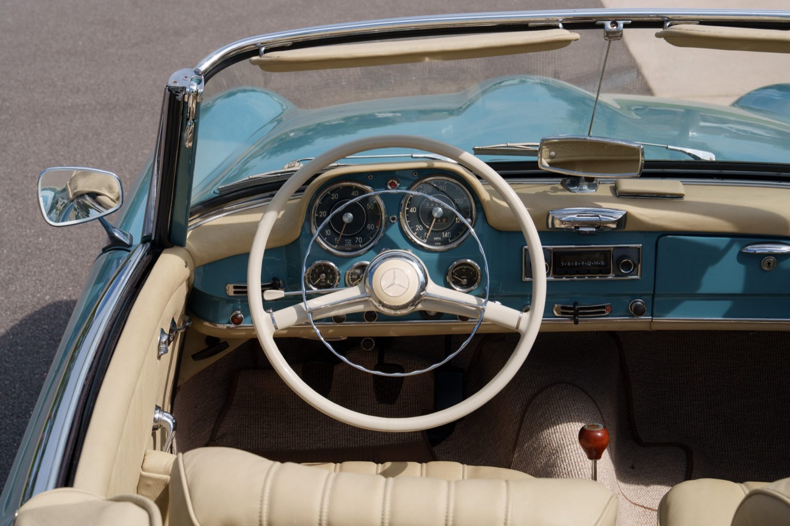
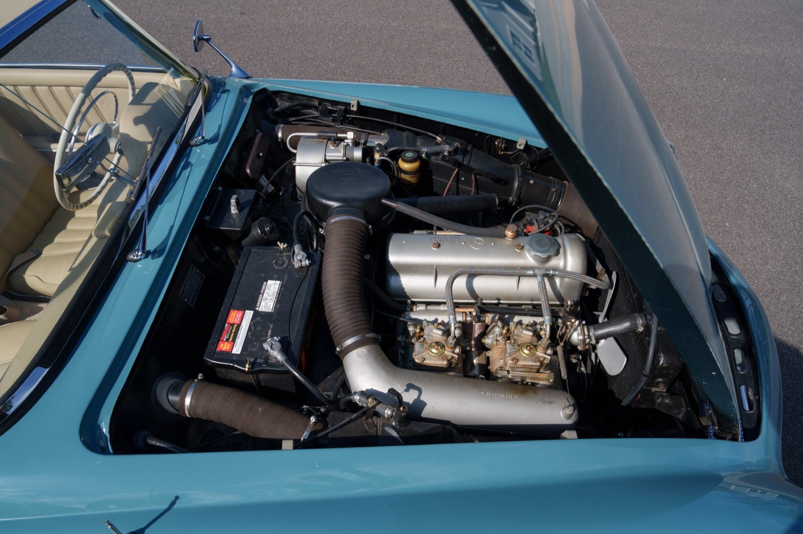

Chassis 12104210025671
Mercedes-Benz 190SL
Light Blue (DB334) · Beige Leather
Purchased new by the original owner’s father and kept in the same
family for decades, this 190SL later received a comprehensive
refurbishment by Silver Star Restorations of Topton,
North Carolina (2013–2018), with work totaling over $75,000. The body
was stripped, rust repaired, floor and trunk sections replaced, and
the car repainted its factory color of Light Blue (DB334). Bumpers,
grille, and trim were re-chromed; the removable hardtop refinished;
and a beige soft top with matching boot fitted.
Power comes from a rebuilt 1.9-liter M121 inline-four
with Weber carburetors, paired to a fully synchronized four-speed
manual. Inside, low-back bucket seats and dashboard trim wear beige
leather, with square-weave carpeting, lap belts, VDO gauges, and a
retro-look stereo. The five-digit odometer shows 52k miles (TMU).
- Engine
- 1.9L M121 I4 · Webers
- Transmission
- 4-Speed Manual
- Color
- Light Blue (DB334)
- Tops
- Hardtop + Beige Soft Top
- Wheels
- 13″ Steel · Body Hubcaps
- Odometer
- 52k Shown · TMU





Details & photography from
Bring a Trailer Lot #252,725
· Photos by clint_davis